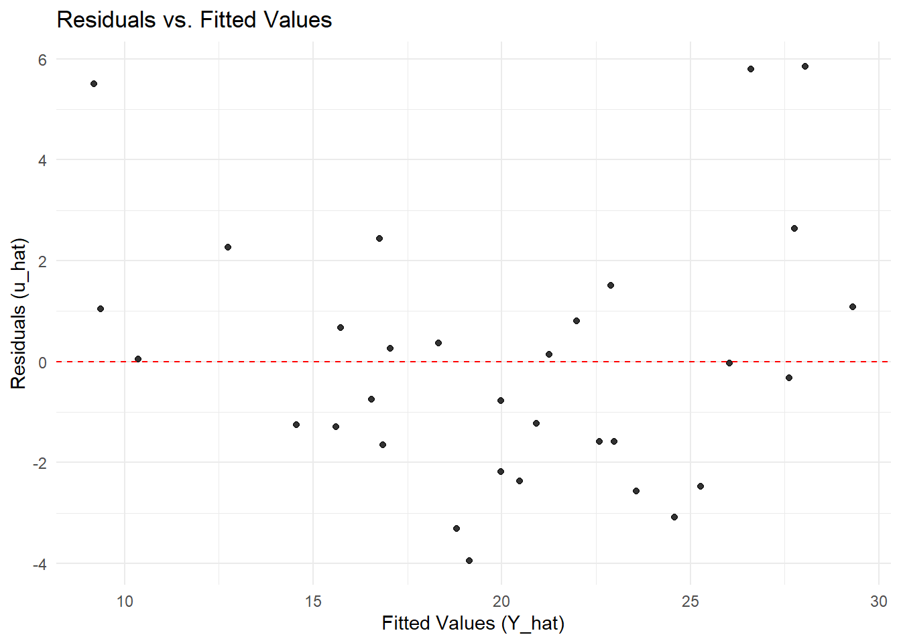

We have seen the assumptions for the Ordinary Least Squares (OLS) estimators \(\hat{\alpha}\) and \(\hat{\beta}'s\) to have desirable properties. What does it mean that assumptions do not hold?.
Consider the following bivariate population model:
We start with this one, as it is the most commons and serious of many econometric specifications. Basically we have endogeneity when any of the explanatory variable \(X's\) is correlated with the error term \(u\).
\[Cov(X_i's, u_i) \neq 0\]
This basically means that there are other important factors that affect the dependent variable \(Y_i\) which if not included in the regression model will result in incorrect estimates!
Implication: Essentially \(\hat{\beta}\) will be biased and inconsistent.
Violation of Assumption 1: Conditional mean is not zero
Endogeniety or violation of assumption 4 implies that Assumption 1, the zero conditional mean, also does not hold! The error term \(u\) will not have expected value of zero, given the values of the explanatory variables\(X's\).
\[E(u_i | X_i's) \neq 0\]
Violation of Assumption 2: Heteroskedasticity
The error term \(u\) has non-constant variances given the values of the explanatory variables.
\[Var(u_i | X_i's) \neq \sigma^2\]
Implication: In this case, OLS estimates are still unbiased but their standard errors are incorrect/inefficient, which leads to faulty hypothesis tests and confidence intervals.
Violation of Assumption 3: Autocorrelation
The error terms for any two or more different observations are correlated.
\[Cov(u_i, u_j | X_i) \neq 0 \quad \text{for all } i \neq j\]
Implication: Like heteroskedasticity, if we have autocorrelation then OLS estimates remain unbiased but the standard errors are incorrect/inefficient, leading to unreliable inference.
Note: Autocorrelation (a.k.a. serial autocorrelation) is usually a concern for time-series data, i.e. usually \(Cov(u_t , u\_{t-1}) \neq 0\).
Violation of Assumption 5: Perfect (or near perfect) Multicollinearity
Interpretation (for simple regression): In the simple regression model with one explanatory variable, this assumption is automatically satisfied as long as \(X\) is not constant.
Implication: When we have perfect multicollinearity, any independent variable is a perfect linear combination of other independent variable(s), then we canot get OLS estimates, and econometric packages will often delete one.
4.2 Checking Assumptions
4.2.1 Testing for Heteroskedasticity
As previously mentioned, a quick look at residual plots is useful a good start to vidually look for hoteroskedasticity and/or non-zero mean.
# Fit the modelmodel <-lm(mpg ~ wt + hp, data = mtcars)# Create a dataframe of fitted values and residualsdiagnostic_data <-data.frame(fitted =fitted(model),residuals =resid(model))# Plot residuals vs. fitted valueslibrary(ggplot2)
Warning: package 'ggplot2' was built under R version 4.4.3
ggplot(diagnostic_data, aes(x = fitted, y = residuals)) +geom_point(alpha =0.8) +geom_hline(yintercept =0, linetype ="dashed", color ="red") +labs(title ="Residuals vs. Fitted Values",x ="Fitted Values (Y_hat)",y ="Residuals (u_hat)") +theme_minimal()

A more formal test is the White test, a general and powerful test for heteroskedasticity. The test works by regressing the squared residuals from the original model on the original explanatory variables, their squares, and their cross-products.
The null and alternative hypotheses are:
\(H_0\): Homoskedasticity exists (the error variance is constant).
\(H_1\): Heteroskedasticity exists (the error variance is not constant).
# install.packages("lmtest") # Uncomment and run if neededlibrary(lmtest)# Perform the White test for the simple model mpg ~ wtbptest(model, ~ wt * hp +I(wt^2) +I(hp^2), data = mtcars)
studentized Breusch-Pagan test
data: model
BP = 6.5431, df = 5, p-value = 0.2569
The bptest() output shows a BP test statistic and a p-value. A p-value < 0.05 means you reject the null hypothesis of homoskedasticity. In the mtcars example above, we fail to reject the null hypothesis, suggesting that we have may not have heteroskedasticty.
Alternatively:
# 1. Estimate the original simple regression modelsimple_model <-lm(mpg ~ wt, data = mtcars)# 2. Obtain the squared residuals from the modelsquared_residuals <-resid(simple_model)^2# 3. Perform the "auxiliary regression" for the White test:# Regress the squared residuals on the original regressor (wt) and its square (wt²).white_aux_model <-lm(squared_residuals ~ wt +I(wt^2), data = mtcars)# 4. Conduct an F-test on the auxiliary model.# The null hypothesis is that the coefficients on 'wt' and 'I(wt^2)' are zero.# install.packages("car") # Uncomment and run if you don't have the 'car' packagelibrary(car)linearHypothesis(white_aux_model, c("wt=0", "I(wt^2)=0"))
Linear hypothesis test:
wt = 0
I(wt^2) = 0
Model 1: restricted model
Model 2: squared_residuals ~ wt + I(wt^2)
Res.Df RSS Df Sum of Sq F Pr(>F)
1 31 4542.5
2 29 4348.6 2 193.95 0.6467 0.5312
We look at the F-statistic and its p-value (Pr(>F)). A p-value < 0.05 provides evidence to reject the null hypothesis (\(H_0\)) of homoskedasticity, thereby suggesting the error variance is not constant and depends on weight (wt). Here, again Pr(>F) is 0.5312, hence we fail to reject the null.
4.2.2 Testing for Autocorrelation
4.2.3 Testing for Multicollinearity
4.2.4 Testing for Endogeneity
Endogeneity occurs when an explanatory variable is correlated with the error term (\(Cov(X, u) \neq 0\)), violating a key Gauss-Markov assumption (4). This often arises from:
Confounding leading to omitted variable bias
Reverse causality
Measurement Error
Simultaneity
The consequence is that the OLS estimator becomes biased and inconsistent.
The Logic of the Hausman Test
The test follows a straightforward logic:
Null Hypothesis (\(H_0\)): The variable in question is exogenous (\(Cov(X, u) = 0\)). OLS is consistent and efficient.
Alternative Hypothesis (\(H_1\)): The variable is endogenous (\(Cov(X, u) \neq 0\)). OLS is inconsistent.
The test compares two estimators:
OLS Estimator: Efficient (has the smallest possible variance) under \(H_0\), but inconsistent under \(H_1\).
IV (Instrumental Variables) Estimator: Consistent under both \(H_0\) and \(H_1\), but inefficient (has larger variance) under \(H_0\).
If the variable is exogenous (\(H_0\) is true), the OLS and IV estimates should be similar. If they are significantly different, we have evidence that endogeneity is present (\(H_1\) is true).
Implementing the Hausman Test in R: A Step-by-Step Guide
The test is implemented as a Durbin-Wu-Hausman test via a convenient auxiliary regression.
Prerequisite: You must have at least one valid instrument for the potentially endogenous variable. A valid instrument must be:
Relevant: Correlated with the endogenous variable.
Exogenous:Not correlated with the error term (\(Cov(Z, u) = 0\)).
Scenario: Suppose we fear that wt (weight) is endogenous in our model mpg ~ wt. Suppose we use hp (horsepower) as instruments.
Step 1: Estimate the First Stage Regression
Regress the potentially endogenous variable (hp) on all exogenous variables and the instruments.
# First Stage: Regress the endogenous variable on instruments and other exogenous varsfirst_stage <-lm(hp ~ wt + hp, data = mtcars)# Retrieve the residuals from the first stagefirst_stage_residuals <-resid(first_stage)# Add these residuals to the original dataset for the next stepmtcars$fs_resid <- first_stage_residuals
Step 2: Estimate the Auxiliary Regression Run the original model, but include the first-stage residuals as an additional regressor.
# Auxiliary Regression: Original model + first stage residualsauxiliary_model <-lm(mpg ~ wt + fs_resid, data = mtcars)summary(auxiliary_model)
Call:
lm(formula = mpg ~ wt + fs_resid, data = mtcars)
Residuals:
Min 1Q Median 3Q Max
-3.941 -1.600 -0.182 1.050 5.854
Coefficients:
Estimate Std. Error t value Pr(>|t|)
(Intercept) 37.28513 1.59870 23.322 < 2e-16 ***
wt -5.34447 0.47605 -11.227 4.49e-12 ***
fs_resid -0.03177 0.00903 -3.519 0.00145 **
---
Signif. codes: 0 '***' 0.001 '**' 0.01 '*' 0.05 '.' 0.1 ' ' 1
Residual standard error: 2.593 on 29 degrees of freedom
Multiple R-squared: 0.8268, Adjusted R-squared: 0.8148
F-statistic: 69.21 on 2 and 29 DF, p-value: 9.109e-12
Step 3: Interpret the Result - The key is the t-test on the coefficient of the residual variable (fs_resid). - Null Hypothesis (\(H_0\)): The coefficient on the residuals is zero. This means the variable (wt) is exogenous. - Alternative Hypothesis (\(H_1\)): The coefficient on the residuals is not zero. This is evidence of endogeneity.
A low p-value (typically < 0.05) on the fs_resid coefficient leads to a rejection of the null hypothesis, suggesting that wt is indeed endogenous.
Using the ivreg and lmtest packages
A more efficient method is to use the ivreg() function from the AER package and then formally test for endogeneity.
Specifying a model with instruments: The syntax y ~ x1 + x2 | z1 + z2 means that we are regressing y on x1 and x2, using for x2 instruments z1 and z2 (and x1 is included as its own instrument).
# install.packages("AER") # Install the Applied Econometrics with R packagelibrary(AER)library(lmtest)# 1. Estimate the model via IV and OLS# IV model: Specify the formula and instrumentsiv_model <-ivreg(mpg ~ wt | hp, data = mtcars)# 2. Perform the Hausman test# The null is that OLS is consistent (no endogeneity)# Run summary with diagnosticssummary(iv_model, diagnostics =TRUE)
Call:
ivreg(formula = mpg ~ wt | hp, data = mtcars)
Residuals:
Min 1Q Median 3Q Max
-4.634 -2.428 -1.063 2.291 10.052
Coefficients:
Estimate Std. Error t value Pr(>|t|)
(Intercept) 43.440 3.282 13.237 4.62e-14 ***
wt -7.258 1.001 -7.252 4.50e-08 ***
Diagnostic tests:
df1 df2 statistic p-value
Weak instruments 1 30 23.00 4.15e-05 ***
Wu-Hausman 1 29 12.38 0.00145 **
Sargan 0 NA NA NA
---
Signif. codes: 0 '***' 0.001 '**' 0.01 '*' 0.05 '.' 0.1 ' ' 1
Residual standard error: 3.591 on 30 degrees of freedom
Multiple R-Squared: 0.6564, Adjusted R-squared: 0.6449
Wald test: 52.59 on 1 and 30 DF, p-value: 4.497e-08
Interpreting the Test:
Weak Instruments Test
What it tests: Whether the instrument(s) (hp) is sufficiently correlated with the endogenous regressor (wt). A strong first-stage relationship is crucial for IV to work.
Interpretation: The null hypothesis is that the instruments are weak.
The result (p-value = 4.15e-05), an extremely low p-value, suggests that we should strongly reject the null. The instrument(s) are not weak; they are strong and relevant. This is a good sign.
Wu-Hausman Test (for Endogeneity)
What it tests: This is the test for endogeneity. The null hypothesis (\(H_0\)) is that the variable (wt) is exogenous. The alternative (\(H_1\)) is that it is endogenous.
Interpretation: A low p-value suggests you should reject \(H_0\) and use the IV estimator. A high p-value means you cannot reject \(H_0\) and should prefer the efficient OLS estimator.
The result (p-value = 0.0014), a low p-value means we should reject the null hypothesis. There is statistical evidence that wt is endogenous. Therefore, the standard OLS estimates for mpg ~ wt gives biased etimates.
Sargan Test (for Overidentifying Restrictions)
What it tests: This test checks the validity of your overidentifying instruments. It is only relevant if you have more instruments than endogenous variables. The null hypothesis (\(H_0\)) is that the extra instruments are valid (uncorrelated with the error term).
Interpretation: A low p-value is undesirable, as it means you should reject \(H_0\) and suspect that at least one of your extra instruments is invalid.
What to Do If You Find Endogeneity?
If the test suggests endogeneity, you should not trust the OLS results. You must use a method that addresses the endogeneity, such as:
Finding Better Controls: If the endogeneity is from omitted variable bias.
Instrumental Variables (IV) Regression: The primary solution, implemented with ivreg().
Using Panel Data Methods: Such as fixed effects models, if you have panel data.
Important: The validity of the Hausman test hinges on the quality of your instruments. If your instruments are weak or invalid, the test itself is unreliable. Always check the first-stage F-statistic to ensure instrument strength (a rule of thumb is F-stat > 10).